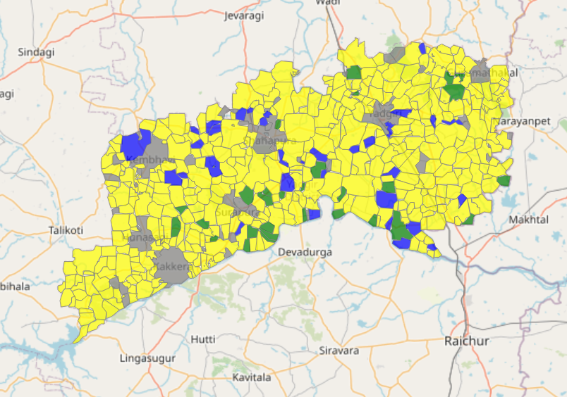
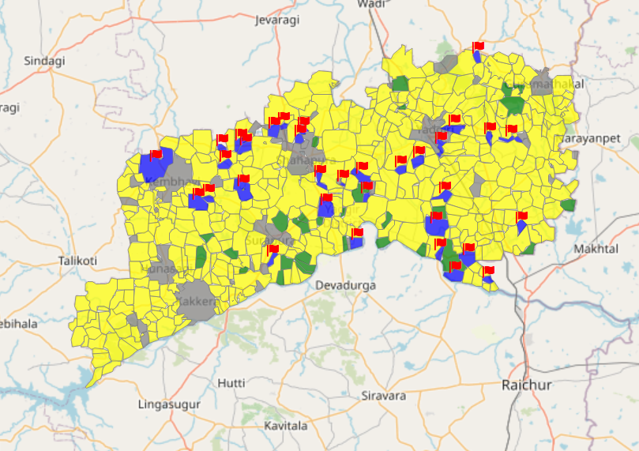

Analysis of Water Quality, Quantity, Coverage, and Certification
Click on the links below for the analysis of other significant factors:
Go to Homepage
Jal Jeevan Mission (JJM) Village Status Classification:
The JJM has classified villages into three categories based on their level of implementation and access to Functional Household Tap Connection (FHTC).
- Certified: Villages with 100% FHTC coverage.
- Reported: Villages making progress but not yet certified.
- In Progress: Villages in the early stages of implementation.
Observation JJM Status:
The observation of JJM status considers three significant factors:
- Water Quality: Assessing safety and purity.
- Water Quantity: Availability of an adequate and consistent water supply.
- Coverage: Extent of FHTC coverage.
To be declared as "Certified" under observation of JJM status, a village must fulfill all three factors.

This image displays the certification status. It indicates whether a particular certification has been achieved or not. It serves as a visual indicator of the certification status, providing information about the completion or verification of a specific process or requirement.

This image represents an observation report. It is used to record and document observations made during a specific event, process, or activity. The report may include details about findings, assessments, or analyses, providing valuable insights and information for further review or action.
|
Certified |
|
Reported |
|
Ongoing |
Analysis:
- All certified villages are questionable based on the observations.
- This could be due to issues related to water quality, water quantity, and coverage.
- There are defined permissible limits for each parameter, and the water quality should not exceed these limits to be certified.
- All questionable villages need to be investigated to understand how certification has been issued to them.